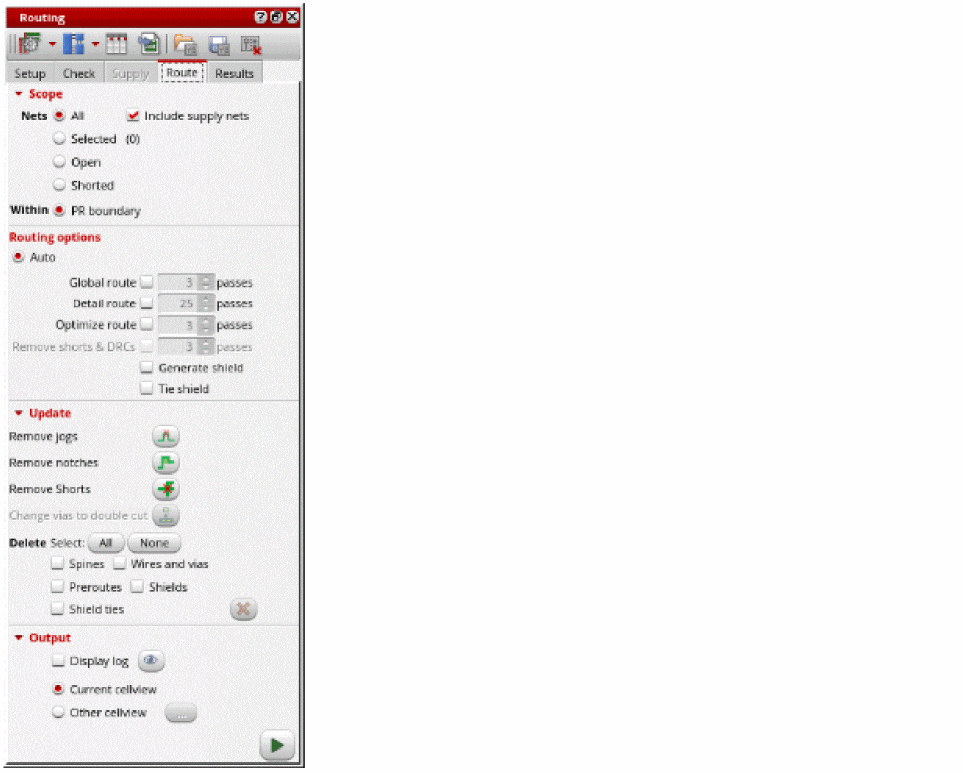
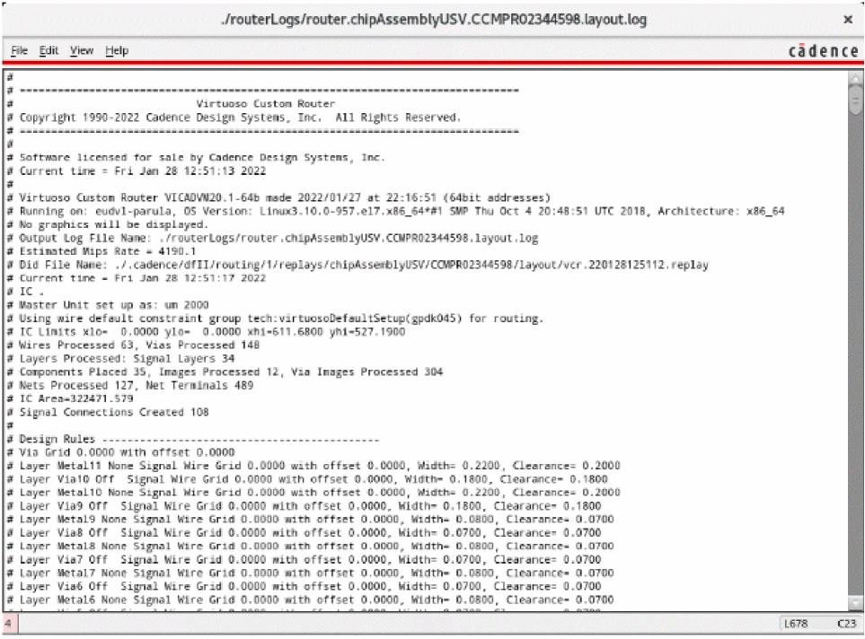

Routing in Automatic Mode
The Auto mode of Chip Assembly routing is the most appropriate routing style for channel type of designs. To obtain a clean result and high quality of results, global, detail, and optimize routing steps are all required, with 3, 10, and 3 passes, respectively. Depending on the design size, the PDK, the floorplan, and the constraints, the number of passes can be adjusted.
- Open a design in Layout MXL.
- Select the nets of interest from the Navigator assistant.
-
Choose Window – Assistants – Routing.
Alternatively, right-click anywhere on the layout window menu bar and choose Assistants – Routing. -
In the Routing assistant, click the Route tab.
 - Select the nets to route. You can either select All, Selected, Open, or Shorted nets.
- Select Include Supply Nets to include power and ground nets to the list of nets to be routed.
- Select PR boundary to run routing within the PR boundary.
- Select the routing option to be run. You can select Global route, Detailed route, Optimize route, or Remove shorts & DRCs.
- Specify the required number of passes for selected router.
- Specify a cellview to save the routing results. You can save the results either in the current view or specify another cellview.
-
Click Run signal router
 to run signal routing.
to run signal routing.
The selected nets are routed. While the router is running, the Stop button is displayed. A directory calledrouterLogsis created in the run directory. Clicking the Stop button cancels the current run without retrieving any routing information from the memory design.
Check the contents of the log file, especially the different route passes and observe the convergence, the runtime, and the overall stats. An essential section of the log window is ROUTING HISTORY, which displays the detailed runtime for each pass and the total runtime. Other statistics are also displayed, such as violations (conflicts), opens, and number of vias.
Routing errors are reported in the CIW, which might be hidden underneath other windows. The CIW can be raised automatically by setting the following environment variable:envSetVal("ui" "raiseCIWonError" 'boolean t)
Improving Routing Results
- In the Routing assistant, click the Route tab.
-
Select Remove Jogs in the Update section of the Route tab.
This option is needed when the router or pre-routed wires might have unnecessary jogs. You can run this command on the entire design or on the selected nets. -
Select Remove Notches to fix the notches between the wires and pins.
The improved routing results for the selected nets is displayed in the layout window.
Deleting Routed Nets
To delete the routing on nets:
- In the Routing assistant, click the Route tab.
-
In the Update section of the Route tab, click the All button to select all types of routing objects. You can also select to delete any of the Spines, Wires and vias, Preroutes, Shields, or Shield ties.
- Click Delete to delete all the routing from the design.
-
To re-run signal routing, click Run signal router
.
The routing results for the selected nets is displayed in the layout window.
Related Topics
Chip Assembly Routing Configuration
Routing Assistant User Interface for Chip Assembly Routing Flow
Configuring Chip Assembly Routing Settings
Checking Layout Routability in Chip Assembly
Viewing and Analyzing Chip Assembly Routing Results
Return to top